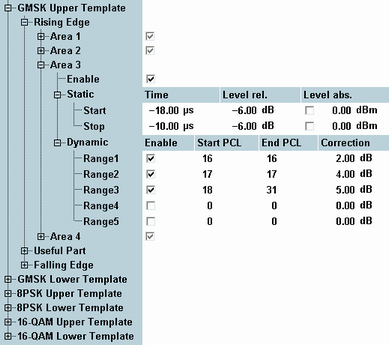
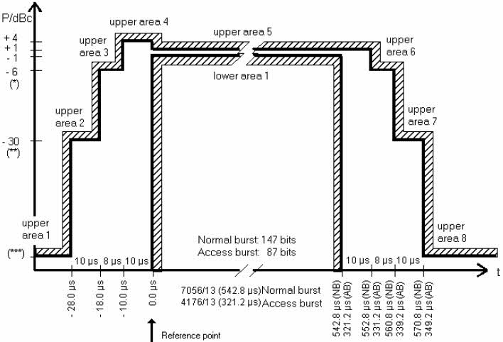
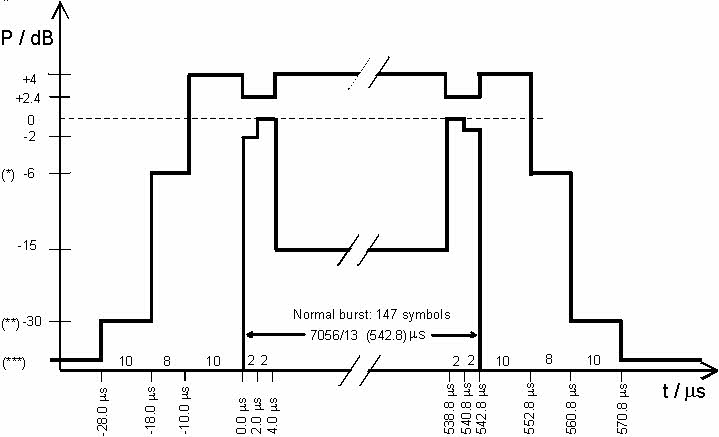
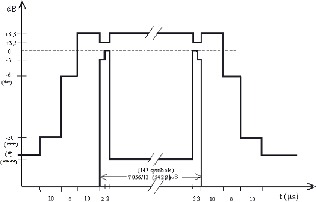
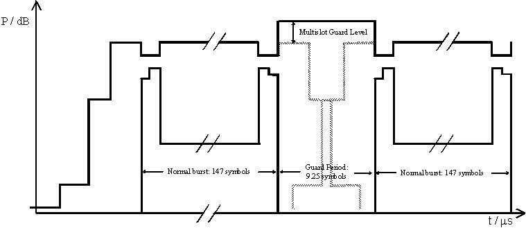

The GSM power templates specify the dynamic structure (power/time relationship) of the transmitted GSM bursts in single-slot and multislot operation. The burst is subdivided into different time intervals (areas) with specified upper and lower transmitter output power. The entire power template is defined relative to the average burst power, however, some burst edges are PCL-dependent ("Dynamic" limit line correction). Power templates and average burst power limits complement each other.
If the GSM multi-evaluation measurement is performed in combination with the "GSM Signaling" application, the PCL value for the dynamic correction is taken from the signaling application. In "Standalone (Non Signaling)" mode, the R&S CMW estimates the PCL according to the received average burst power. |
The power templates depend on the modulation scheme of the burst; they can be set in the configuration dialog (for reference information refer to "Power Templates").

The figures below show the test requirements of specification 3GPP TS 51.010-1, section 13.3 and specification 3GPP TS 45.005, annex B. The following tolerances apply to GPSK-modulated bursts (see legend below the 8PSK template below):

The following tolerances apply to 8PSK-modulated bursts:

GSM400/GT800/850/900-MS | GSM1800/1900-MS |
|---|---|
(*) –4.0 dBc for power control level (PCL) 16 –2.0 dBc for PCL 17 –1.0 dBc for PCL 18 and 19 to 31 | –4.0 dBc for PCL 11 –2.0 dBc for PCL 12 –1.0 dBc for PCL 13, 14 and 15 to 28 |
(**) –30.0 dBc or –17.0 dBm (higher value) | –30.0 dBc or –20.0 dBm (higher value) |
(***) –59.0 dBc or –36.0 dBm (higher value) | –48 dBc or 48 dBm (higher value) |
The following tolerances apply to 16-QAM-modulated bursts:

GSM400/GT800/850/900-MS | GSM1800/1900-MS |
|---|---|
(*) –59.0 dBc or –36.0 dBm (higher value) | –48 dBc or 48 dBm (higher value) |
(**) –4.0 dBc for power control level (PCL) 16 –2.0 dBc for PCL 17 –1.0 dBc for PCL 18 and 19 to 31 | –4.0 dBc for PCL 11 –2.0 dBc for PCL 12 –1.0 dBc for PCL 13, 14 and 15 to 28 |
(***) –30.0 dBc or –17.0 dBm (higher value) | –30.0 dBc or –20.0 dBm (higher value) |
(****) Lower limit within the useful part of the burst undefined | Lower limit within the useful part of the burst undefined |
According to specification 3GPP TS 51.010-1, sections 13.7 and 13.16.2, the power/time template for multislot configurations coincides with the template for a single GSM burst.
- The output power must not exceed the level allowed for the useful part of the first timeslot or
- The level allowed for the useful part of the second timeslot plus a multislot guard level of 3 dB,
Whichever is the highest.
The template for two consecutive 8PSK modulated timeslots with the same output power is shown below.
